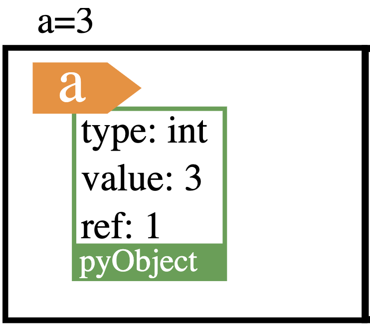

types simples
Les variables et les types natifs en Python
Cette page apporte des informations sur sur les types de base, sur les fonctions de la librairie math, sur les références, et les méthodes de chaines.
Cette rubrique contient 4 pages :
- page 1 : variables natives de base
- page 2 : types construits
- page 3 : TP sur les variables
Les types natifs de base, ce sont les types numérique, int et float, les chaines de caractères str, mais aussi le type None
le type de « rien » : None
C’est le type des instrutions. Valeur possible : None
None est utile par exemple lorsque l’on veut terminer un fonction sans valeur de retour:
Transformer le type des donnée
Pour consulter le type d’une donnée: fontion type:
Pour transformer vers un autre type de base, on utilise les fonctions int, float, str:
| transformer x en … | fonction |
|---|---|
| integer | int(x) |
| float | float(x) |
| string | str(x) |
- Exemple: tranformer en
float:
- transformer en
intconvertit par exemple un flottant en entier en éliminant la partie décimale du nombre :
ou une chaine de caractères en un entier:
Opérations sur les types numériques
Les opérateurs sur les nombres ont été vus dans le cours Python les bases.
- Certaines fonctions natives vont enrichir les possibilités de calcul:
Exemple: arrondir : fonction round(nombre,decimales)
`round(3.1415926,2)` donne `3.14`
- La bibliothèque math contient de nombreuses fonctions utiles au calcul scientifique:
Opérations sur les booléens - rappels
| operateur | symbole | exemple d’expression | resultat |
|---|---|---|---|
| intersection | and | True and False | False |
| reunion | or | True or False | True |
| negation | not | not False | True |
| est égal à | == | True == False | False |
| est différent de | != | True != False | True |
Opérations avec les chaines de caractères
Les opérateurs + et * sont autorisés dans les expressions avec les chaines de caractère.
Le + réalise un concaténation de 2 chaines. Le * répète et concatène la chaine :
Les caractères sont placés dans une chaine. On peut donc y accéder avec leur index, comme pour les Listes:
Mais, contrairement aux Listes, on ne pourra pas modifier un caractère par son index:
Une chaine de caractères est itérable: On peut la parcourir avec une boucle bornée. Par exemple, le script suivant élimine tous les espaces dans la chaine:
méthodes de chaines
Les chaines sont des objets qui possèdent leurs méthodes. il est difficile de se souvenir de toutes les méthodes travaillant sur les chaînes de caractères. Aussi il est toujours utile de recourir à la documentation embarquée
Ce qui donne:
Découpage - assemblage: split et join
Les méthodes split et join permettent de découper une chaîne selon un séparateur pour obtenir une liste, et à l’inverse de reconstruire une chaîne à partir d’une liste.
split permet donc de découper :
Et à l’inverse :
Remarque: Si le séparateur est un terminateur, comme par exemple ‘;’, ou"\n", il conviendra d’utiliser d’abord la méthode strip. Voir compléments en bas de page.
Remplacement: replace
replace est très pratique pour remplacer une sous-chaîne par une autre, avec une limite éventuelle sur le nombre de remplacements :
modifier la casse d’une chaine
utiliser les méthodes title() (titre), upper() (mise en majuscule), lower() (minuscule).
Les méthodes lstrip() (à gauche), rstrip() (droite), et strip() (à droite et à gauche) suppriment les espaces en trop dans les chaines.
à tester vous-même :
Compléments sur les variables et types
Valeur et référence
Les variables en Python sont des références nommées.
Une variable est une donc étiquette associée à une valeur. Ce nom est à peu près quelconque, mais pour l’ordinateur il s’agit d’une référence désignant une adresse mémoire, c’est-à-dire un emplacement précis dans la mémoire vive.
À cet emplacement est stockée une valeur typée bien déterminée.

image issue du cours sur http://www.normalesup.org/
La programme suivant permet de consulter l’adresse mémoire d’une variable:
Typage dynamique
Python est un langage à typage dynamique, ce qui signifie qu’il n’est pas necessaire de déclarer le type de donnée que représentera une variable (c’est la différence avec le typage statique). C’est l’interpréteur qui examine la donnée tout au long de la vie du programme et choisit le type.
Affectation simple et multiple
Affectation simple :
Les termes « affecter une valeur » ou « assigner une valeur » à une variable sont équivalents. Ils désignent l’opération par laquelle on établit un lien entre le nom de la variable et sa valeur (son contenu).
Exemple : a = 2
Lorsque l’ordinateur execute cette instruction, il va :
- créer et mémoriser un nom de variable ;
- lui attribuer un type bien déterminé (ce point sera explicité à la page suivante);
- créer et mémoriser une valeur particulière;
- établir un lien (par un système interne de pointeurs) entre le nom de la variable et l’emplacement mémoire de la valeur correspondante.
Le nom d’une variable est une référence, mémorisée dans une zone particulière de la mémoire que l’on appelle espace de noms, alors que la valeur correspondante est située ailleurs.
Affectation multiple :
Il est possible de réaliser une affectation pour plusieurs variables d’un seul coup :
Compléments sur les strings
strip ou split
Si le séparateur est un terminateur, comme par exemple ‘;’, ou\n, la liste résultat contient alors une dernière chaîne vide. En pratique, on utilisera la méthode strip, que nous allons voir ci-dessous, avant la méthode split pour éviter ce problème.
alors que:
PARSER une chaine de caractères
“Parser” signifie analyser et convertir un script en un format interne que l’environnement d’exécution peut interpréter. Il s’agit d’une analyse syntaxique.
Soit la chaine de caractères suivante, issue d’une requête HTTP:
On souhaite stocker dans 4 variables différentes les informations séparées chacune par des espaces ’ ‘.
méthode utilisant un slide
méthode utilisant une boucle non bornée
On ne connait pas à priori les positions des séparateurs dans la chaine (les espaces ’ ‘). On peut faire une recherche en parcourant la chaine du premier au dernier caractère avec l’instruction while i < len(c): caract = c[i] ...
Les séparateurs se trouvent aux indices 3, 11, et 22. On sait alors que les 4 informations de la chaines sont:
méthode split
La méthode la plus adaptée pour réaliser le parsing d’une chaine, c’est:
Les types construits (séquences)
voir la page suivante: Types construits
Liens
- Compléments: valeur, references, espace de nom: Lien vers le cours de normalesup